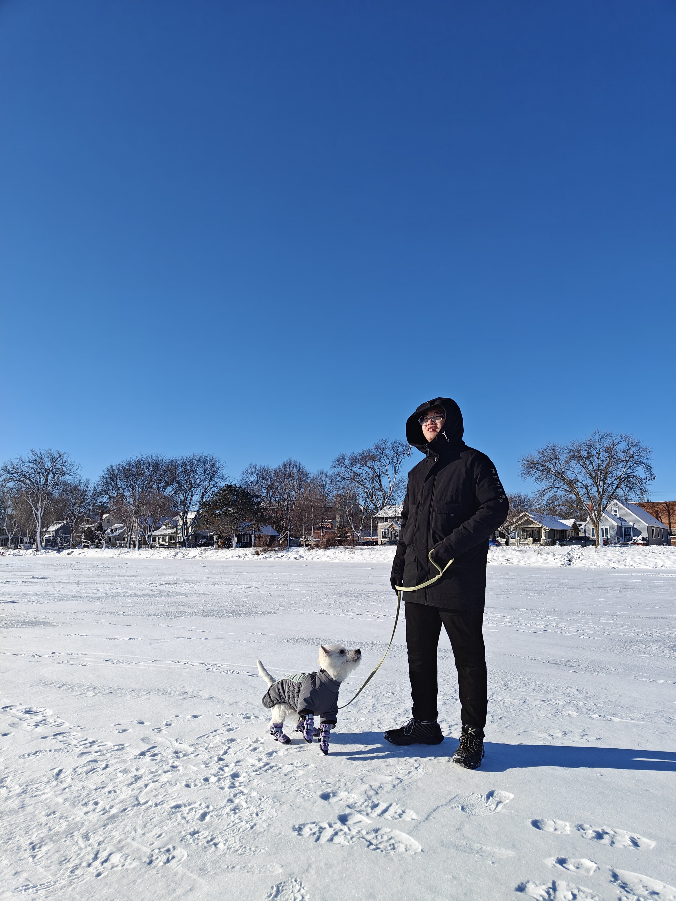

stay with West Highland White terrier
Originating from the West Highlands region of Scotland,the West Highland White Terrier is a cute and friendly dog with a white appearance. The West Highland White terrier is usually very friendly and displays a friendly and gentle attitude towards both humans and other animals. They are usually lively and full of energy, especially when we often run on the open grass, which brings me a lot of joy and vitality. Besides, it is very firm in its loyalty to its master and will always provide protection and warn us when we are in danger.
